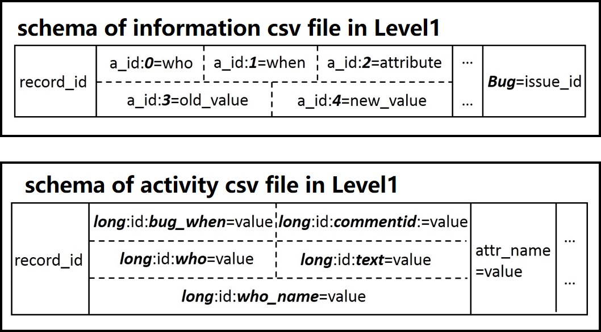

<!--
Copyright © 2019, empirical software engineering team from Peking Uninversity and ISCAS, All rights reserved.

Written by:
  Jiaxin Zhu
-->

<script src='js/header.js'></script>
    <main role="main">

      <section class="jumbotron text-center">
        <div class="container" style="max-width:800px">
          <h1 class="jumbotron-heading" style="margin-bottom:30px">Stay of OSS Contributors</h1>
          <p class="lead text-muted" style="font-size: 19px; text-align: left; margin-top:50px">
          Motivation: To survive and succeed, FLOSS projects need contributors able to accomplish critical project tasks.
          However, such tasks require extensive project experience of long term contributors (LTCs).
          Aim: We measure, understand, and predict how the newcomers' involvement and environment in the issue tracking system (ITS)
          affect their odds of becoming an LTC.
          Method: ITS data of Mozilla and Gnome, literature, interviews, and online documents were used to design measures of involvement
          and environment.
          A logistic regression model was used to explain and predict contributor's odds of becoming an LTC.
          We also reproduced the results on new data provided by Mozilla.
          Results: We constructed nine measures of involvement and environment based on events recorded in an ITS.
          Macro-climate is the overall project environment while micro-climate is person-specific and varies among the participants.
          Newcomers who are able to get at least one issue reported in the first month to be fixed, doubled their odds of becoming an LTC.
          The macro-climate with high project popularity and the micro-climate with low attention from peers reduced the odds.
          The precision of LTC prediction was 38 times higher than for a random predictor.
          We were able to reproduce the results with new Mozilla data without losing the significance or predictive power of the previously
          published model.
          We encountered unexpected changes in some attributes and suggest ways to make analysis of ITS data more reproducible.
          Conclusions: The findings suggest the importance of initial behaviors and experiences of new participants and outline
          empirically-based approaches to help the communities with the recruitment of contributors for long-term participation and to help
          the participants contribute more effectively. 
          </p>
          <p class="lead text-muted" style="font-size: 21px; text-align: left; font-weight:bold; margin-top:50px>Datasets and scripts"> Datasets and scripts</p>
          <p class="lead text-muted" style="font-size: 19px; text-align: left; margin-top:5px"> Data source: Bugzilla of Gnome and Mozilla</p>
          <p class="lead text-muted" style="font-size: 19px; text-align: left; margin-top:5px"> Data type: issue tracker data </p>
          <p class="lead text-muted" style="font-size: 19px; text-align: left; margin-top:5px"> Data schema: </p>
          
          <p class="lead text-muted" style="font-size: 19px; text-align: left; margin-top:5px"> More details:
          <a href="https://zenodo.org/record/971162/files/developerfluency.html">full description</a> </p>
          <p class="lead text-muted" style="font-size: 19px; text-align: left; margin-top:5px"> Download:
          <a href="https://zenodo.org/record/971162/files/gnome.zip">gnome.zip</a> &nbsp;&nbsp;&nbsp;&nbsp;
          <a href="https://zenodo.org/record/971162/files/mozilla.zip">mozilla.zip</a>
          </p>
          <p class="lead text-muted" style="font-size: 16px; margin-top:50px">Papers: </p>
          <p class="lead text-muted" style="font-size: 16px; font-style:italic; text-align: left">
          Minghui Zhou, Audris Mockus: Who Will Stay in the FLOSS Community? Modeling Participant's Initial Behavior.
          IEEE Transactions on Software Engineering, vol.41, no.1, pp.82-99, Jan. 1 2015.
          </p>
          <p class="lead text-muted" style="font-size: 16px; font-style:italic; text-align: left">
          Jiaxin Zhu, Minghui Zhou, and Hong Mei. Multi-extract and multi-level dataset of mozilla issue tracking history.
          In Proceedings of the 13th International Conference on Mining Software Repositories (MSR '16). ACM, New York, NY, USA, 472-475.
          </p>
        </div>
      </section>
<script src='js/footer.js'></script>
